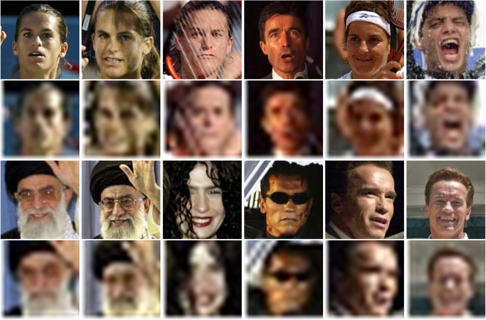
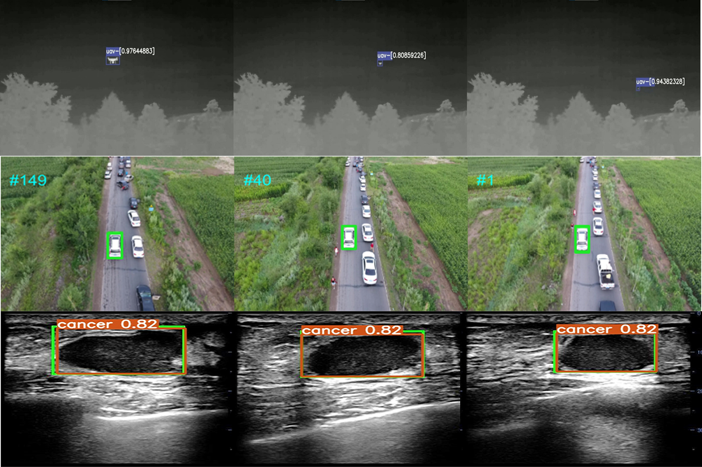

Face Detection and Recognition
Many real-world applications today like video surveillance and urban governance need
to address the
recognition of masked faces, where content replacement by diverse masks often brings in incomplete
appearance, ambiguous representation, and leads to a sharp drop in accuracy.
Low-Resolution Face Recognition

Many real-world applications today like video surveillance and urban governance need
to address the
recognition of masked faces, where content replacement by diverse masks often brings in incomplete
appearance, ambiguous representation, and leads to a sharp drop in accuracy.
Deep Visual Tracking
随着人工智能的发展，物体跟踪技术已经成为计算机视觉中一个重要的研究方向。它在智能安防、交通监控、人机交互、行为识别、军事、医学等领域有着了广泛的应用。物体跟踪任务的难点有复杂场景中存在的光照变化、严重遮挡、尺度变化、非刚性形变、运动模糊、背景干扰等因素引起的目标外观的变化，这使得设计一个在各种复杂场景的情况下能够准确跟踪的算法仍然是一项挑战性的难题。随着深度学习的引入，深度物体跟踪算法由于其强大的特征表示能力在跟踪精度和鲁棒性方面均取得了巨大的突破，现已成为当前主流的物体跟踪方法。